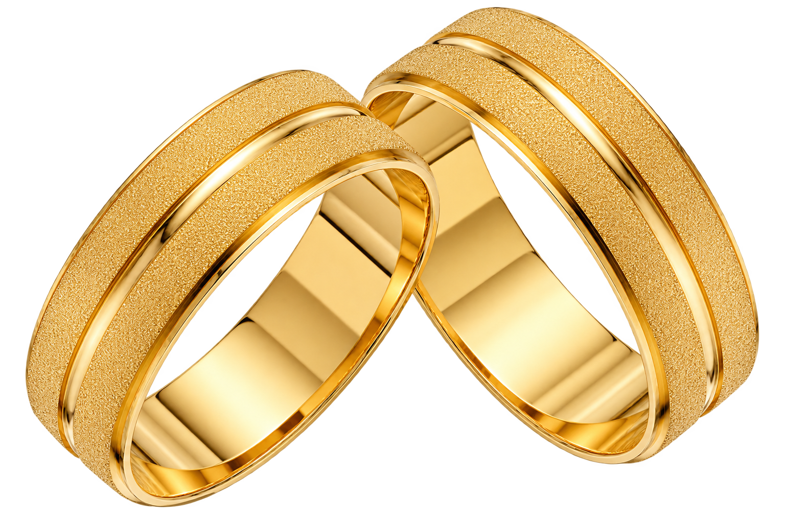
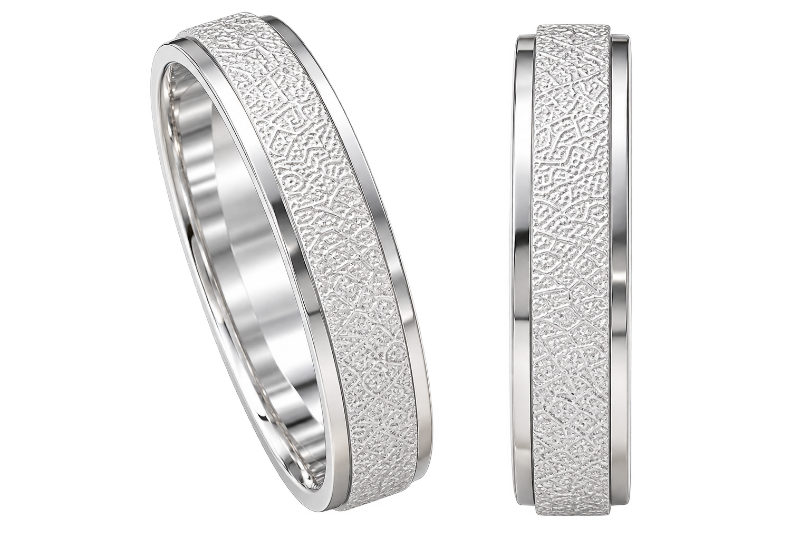

Coleção
Alianças
De Prata e Ouro
Peças atemporais, lapidadas à mão para selar promessas que atravessam gerações.
Explorar Coleção
Passe o mouse ou toque
Prata 925
Pureza, brilho e permanência.
A prata 925 oferece beleza e qualidade em cada detalhe, com um brilho que atravessa o tempo.
- Acabamento sofisticado
- Alta durabilidade
- Design atemporal
Passe o mouse ou toque
Ouro
Um símbolo que atravessa gerações.
O ouro 18K é sinônimo de nobreza, beleza e eternidade. Um clássico que nunca perde seu valor.
- Pureza e autenticidade
- Resistência para toda vida
- Brilho incomparável
Florenza